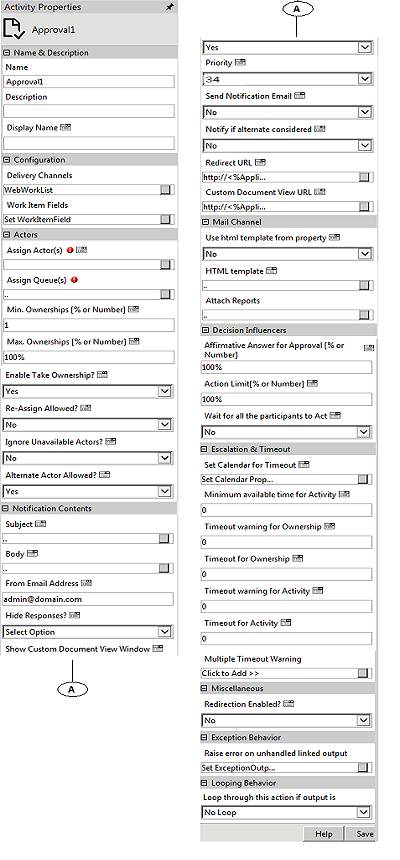
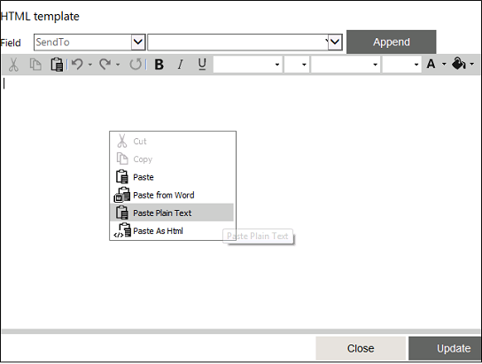

No
Activity Description:
The Approval Action is used in the Workflow Management Workflow process design in cases where an approval request has to be approved by an actor or set of actors.
Application Scenarios:
Typical application scenarios include the Leave Approval Workflow Process, which will have an Approval activity by a Manager, and the Purchase Requisition Workflow, which will have an Approval activity by an Accounts Manager.
Workflow Variables for Approval:
Steps to define variables for use in the Approval activity:
This section describes how to define variables for use in Approval activities. It gives the syntax for creating the variables and typical examples for different cases.
Variables for capturing WorkItemIds
The Activityids for the activity can be retrieved using a variable of type array, with the following syntax:
'^'+CurrentActivity.Name+'WorkItemIds'
For example, ^ManagerApprovalWorkItemIds
Variables for capturing All Actors' Details
The details of the actor(s) to whom the approval work item gets assigned can be accessed by declaring a variable of type array with the following syntax:
'^'+CurrentActivity.Name+'ActingUsers'
For example, ^ManagerApprovalActingUsers.
Variables for capturing Responding Actors' Details
The details of the actor submitting the approval/rejection response can be accessed by declaring a variable of type resource with the following syntax:
'^'+HWSActivity.ActivityName+'RespondingUser'
For example, ^ManagerApprovalRespondingUser.
This variable stores the responded user information. In case of multiple users, it will retrieve the last user details.
Note: For single user, you can declare this variable as Resource type. If task is assigned to multiple users, to get all responded users information, then declare this variable as Array.
Variables for capturing Approving/Rejecting Actor Details
The details of the actor(s) submitting either approval or rejection response can be accessed by declaring a variable of type Array with the following syntax:
'^'+ activityName+'ApprovingUsers' (or)
'^'+ activityName+'RejectingUsers'
For example, ^ManagerApprovalApprovingUsers or ^ManagerApprovalRejectingUsers.
Variables for capturing Comments
To capture the comments entered by an actor, add a variable with a name prefixed by '^', with the following syntax:
'^'+_WorkItem.HWSActivity.ActivityName+'CommentApproved'/'CommentRejected'.
For example, if a comment entered along with an approval submission has to be retrieved from an activity named 'ManagerApproval', add a variable with ^ManagerApprovalCommentApproved as its name. If a comment entered along with a rejection submission has to be retrieved from the same activity, i.e., 'ManagerApproval', add a variable with ^ManagerApprovalCommentRejected as its name. The variable gets initialized with the comment entered by the actor, after the activity response is submitted.
Variables for assigning queue system variable
To assign queues instead of setting the queue through Assign Queue property, add a variable with a name prefixed by '^', with the following syntax:
"^"+ CurrentActivity.Name + "_QueueVariable".
For example, if the activity name is 'Approval1' then declare the variable as ^Approval1_QueueVariable in the Start activity with the Type as String. Using the "Update Variable" activity, assign the queue-id (GUID) for this variable in the workflow.
To assign multiple queues, specify the queue-ids with semicolon (;) as a separator. Skelta.HWS.Queue.QueueCollection class can be used to retrieve queue information.
Variable for Queue Acting Users
You can declare an Array type variable to get updated information about the name of the actor to whom an activity gets assigned from a queue.
In the Workflow Variables, define the variable in the following format:
^+CurrentActivityName+'QueueActingUsers'
Ex: ^HRFormQueueActingUsers
HRForm is the activity name.
For example the value of the user who acts on the HRForm activity will be stored in the variable. The Approval1 task will be assigned to the same user.
Variable for storing timeout warning value
Suppose if you want to store the timeout warning value for an Approval activity in your workflow. The naming convention for the system variable to be declared is:
^<ActivityName>ResponseByWarningTimeout
The value returned by the variable will be in UTC format. For multiple user scenarios the highest timeout value calculated for a user will be available in the variable.
Note:Multiple timeout warnings cannot be tracked using this feature.
Every time you input a value for a property, ensure to save the data. Click the Save button on the Activity Properties window. You need to save the property so that the subsequent properties in the activity can inherit the required information.
Activity Properties:
The Approval activity has to be configured by specifying appropriate values for the different properties in the Action Properties area. The Activity Properties can be accessed by clicking on the Activity Properties tool in the Tool Bar or by selecting the appropriate option from the right click menu for the Approval activity. The Activity Properties are organized under the following groups of related properties. The properties under each group are described in this topic.

Name & Description
The properties in the Name & Description group have been described below. You can use these properties to specify the name and description for the activity.
Name - This property can be used to specify a name for the activity.
Property Type: Optional (This property needs to be set only if necessary.)
Description - This property specifies a brief description to be displayed for the activity.
Property Type: Optional (This property needs to be set only if necessary.)
Display Name - This property specifies the name to be displayed for the activity in the Web Work Item List. The maxlength attribute for type String is added in Action.XML and set the default value as 100. You cannot add more than 100 characters.
If you want to increase the Action name length then you have to manually update it in Action.XML file as well as they have to increase the column size in DB.
Action.XML file changes
<property category="cat_name;01" name="Action Display Name" displayname="Display Name" type="string" maxlength="100" helpstring="Display name for the action in activity list."></property>
Database Changes
You need to modify the following tables to increase the column size for action name to more than 100:
Property Type: Optional (This property need not be set if the display name is already configured in the Actions.XML. The name entered here overrides any display name that is configured for this activity in the Actions.XML file.)
Configuration
You can use these properties to configure the functionality of the activity.
Delivery Channels - This property is used to specify the delivery channels to deliver this activity to the assigned actor(s). Multiple channels can be specified giving the actor(s) different options to act on the work item.
Property Type: Optional (This property needs to be set only if necessary.)
Steps to set the Delivery Channel Property
See Approval - Delivery Channels for a detailed description of the Delivery Channels property window.
Work Item Fields - This property is used to set the Work Item Fields to be used to display application data as well as value in variables and content in the Work Item list when this activity is executed.
Property Type: Optional (This property needs to be set only if necessary.)
Steps to set the Work Item Fields property
See Approval - Work Item Fields for a detailed description of the Work Item Fields property window.
Actors
The properties in the Actors group have been described below. You can use these properties to specify the actors who will work on the activity and related properties.
Assign Actor(s) - This property is used to specify the actor(s) who has to take up the Approval activity. It is tagged with the Ignore Unavailable Actors property which in turn is tagged with the Alternate Actor Allowed property. This will be explained in detail later.
Property Type: Mandatory (This property must be set if the activity is to be assigned to any actor(s).)
Steps to set the Assign Actor(s) property
See Approval - Assign Actor(s) for a detailed description of the Assign Actor(s) property window.
See the Using XML Variables section in the About the XML Variable User Interface topic for details on how to use the XMLVariables to build the expression.
Assign Queue(s) - This property specifies the queue(s) to which the Approval activity is to be assigned.
Property Type: Mandatory (This property must be set if the activity is to be assigned to any Queue(s).)
Steps to set the Assign Queue(s) property
See Approval - Assign Queue(s) for a detailed description of the Assign Queue(s) property window.
Min. Ownerships [% or Number] - This property, which can be specified as a number or percentage, is the minimum number of actors who should take ownership of the Approval request. This property is related to the 'Timeout warning for Ownership' and 'Timeout for Ownership' properties.
Property Type: Optional (This property needs to be set only if necessary. It is useful in group response scenarios.)
Max. Ownerships [% or Number] - This property (referred to as Max.Ack), which can be specified as a number or percentage, is the maximum number of actors who should take ownership of the Approval request.
Property Type: Optional (This property needs to be set only if necessary. It is useful in group response scenarios.)
Enable Take Ownership? - If this property is set to Yes, then the actor is provided with a Take Ownership option in the Work items list to take ownership of the task. If you are not required to take Take Ownership of the Work items list, then set this property as No.
Note: By default, this property is set as Yes.
Property Type: Optional (This property needs to be set only if necessary.)
Steps to set the Enable Take Ownership? property
Re-Assign Allowed? - If this property is set then the actor is provided with a Re-Assign option. Using this the approver can re-assign the work item to another resource.
Property Type: Optional (This property needs to be set only if necessary.)
Ignore Unavailable Actors? - This property provides the following options - Yes, Yes - holidays excluded and No.
Property Type: Optional (This property needs to be set only if necessary.)
Alternate Actor Allowed? - This property is set to assign a particular task to an alternate actor in the absence or unavailability of any actor.
Property Type: Optional (This property needs to be set only if necessary.)
Notification Contents
The properties in the Notification Contents group have been described below. You can use these properties to specify the content used to notify actors about the activity.
Subject - This is the subject of the Approval request. The subject can be customized for each actor.
Property Type: Optional (This property need not be set. If it is not set, the default subject line from the Actions.XML file is displayed.)
Steps to set the Subject property
See Approval - Subject for a detailed description of the Subject property window.
Body - This is the actual message body of the Approval request sent to the actor(s). The message can be customized for each actor. There is an Enterprise Console Explorer(plug-in) edit icon in the Body property window to get the Work item details URL. See Enterprise Console Control (EC Plug-in) for more information.
Property Type: Optional (This property need not be set.)
Steps to set the Body property
See Approval - Body for a detailed description of the Body property window.
From Email Address? - This property is used to specify the email address from which notification messages will be sent for the activity.
Property Type: Optional (This property needs to be set only if necessary. If it is not set, the default value in Actions.XML will be used.)
Hide Responses? - If this property is set to 'No', then actors can see the responses of other actors in a group approval scenario. To view these responses i.e., ownerships, approvals or rejections, select the 'Take Ownership' option. This will open a new pop up with the responses of other actors who have taken ownership.
Property Type: Optional (This property needs to be set only if necessary. It is useful in group response scenarios.)
Show Custom Document View Window - If this property is set to 'Yes', then the Custom Document View Window will be shown to actors in their Work Item Lists.
Property Type: Optional (This property needs to be set only if necessary.)
Priority - This property is set to indicate the priority of the approval request. Enter the values 0-33 to set as Low, 34-66 for Medium, or 67-99 for High. The default value is set to 34.
Property Type: Optional (This property needs to be set only if necessary.)
Send Notification Email - If this property is set to 'Yes', then notification emails will be sent to the actors. If it is set to 'Yes-HTML', then the emails will be sent in HTML format.
Property Type: Optional (This property needs to be set only if necessary.)
Notify if alternate actor is considered - If this property is set to 'Yes', then notification emails will be sent to the actors when an alternate actor is considered.
Property Type: Optional (This property needs to be set only if necessary.)
Redirect URL - This property is used to get the URL of the web page to redirect the client to, in the case of synchronous execution of the activity.
Property Type: Optional (This property needs to be set only if necessary.)
Steps to set the Redirect URL property
See Approval - Redirect URL for a detailed description of the Redirect URL property window.
Custom Document View URL - This property is used to get the URL of the page to which the custom document dlls does a post. The data posted to the page are application, workflow, executionid, executiondetailsid, and workitemid. The posted data can be retrieved as Request.Form["workitemid"].
Property Type: Optional (This property needs to be set only if necessary.)
Steps to set the Custom Document View URL property
See Approval - Custom Document View URL for a detailed description of the Custom Document View URL property window.
Refer topic Viewing and Editing Microsoft SharePoint Items from Work Item List under chapter Working with Work Item List in Microsoft SharePoint in the User Guide.
This topic provides the procedure for displaying Microsoft SharePoint list, library or view contents in the custom document view of the activity.
Mail Channel
The properties in the Mail Channel group have been described below. You can use these properties to customize the approval activity(activities) with different mail channel templates.
Use html template from property - If this property is set to 'No', then it will take the mail channel template from the physical path
'[AVEVA Work Tasks Installed Path]\WorkflowElements\Default\en-US\Templates\OutlookEmailTemplate\AprovalEmail.html.
If this property is set to 'Yes' and the "HTML Template" property is empty, then it will take the mail channel template from the physical path
'[AVEVA Work Tasks Installed Path]\WorkflowElements\Default\en-US\Templates\OutlookEmailTemplate\AprovalEmail.html.
Property Type: Optional (This property needs to be set only if necessary.)
HTML template - This property is used to define the html template for mail channel.
Property Type: Optional (This property needs to be set only if necessary.)
Steps to set the HTML template

See Approval - HTML Template template for a detailed description of the property HTML template window.
Attachment
This property is used to configure Report to be sent as an Email attachment.
Property Type: Optional (This property needs to be set only if necessary.)
Steps to set the Attachment property
See Approval - Attach Reports for a detailed description of this property.
Decision Influencers
The properties in the Decision Influencers group have been described below. You can use these properties to specify some parameters that influence the outcome of the activity.
Affirmative Answer for Approval [% or Number] - This property is used to check what percentage or number of persons should take action for approval. Decision on the approval is taken only after the specified number or percentage of actor(s) have taken the action. The work item waits for the actors' action until the 'Timeout for activity' is reached.
Property Type: Optional (This property needs to be set only if necessary. It is useful in group response scenarios.)
Action Limit [% or Number] - This property specifies the minimum number of approvers to act on the Approval before the 'Timeout Warning for Action'. If the activity limit is reached before the 'Timeout Warning for Action' then the warning message is not shown.
Property Type: Optional (This property needs to be set only if necessary. It is useful in group response scenarios.)
Wait For All The Participants To Act -
Property Type: Optional (This property needs to be set only if necessary. It is useful in group response scenarios.)
Escalation & Timeout
The properties in the Escalation & Timeout group have been described below. You can use these properties to specify escalation and timeout settings for the activity.
Set Calendar for Timeout - This property is used to specify the calendar to be used to determine activity timeouts.
Property Type: Optional (This property needs to be set only if necessary.)
Steps to Set Calendar for Timeout
See Approval - Set Calendar for Timeout for a detailed description of the Set Calendar for Timeout property window.
Minimum available time for Activity - This property is used to check the availability of an actor to whom a task must be assigned while executing the activity. The availability check for the actor is done based on the Calendar settings (Global or Resource Calendar). If the time taken to complete the task is within the value set for the Minimum available time for Activity property, then the task will be assigned to that actor. However, if the time taken to complete the task exceeds the value set for the Minimum available time for Activity property, then the task will be assigned based on the values set for the Ignore Unavailable Actors? and Alternate Actor Allowed? properties.
Property Type: Optional (This property needs to be set only if necessary.)
Timeout for Ownership - This property specifies the time until which actors are allowed to take ownership, i.e. the time until which the Approval activity will wait for actors to take ownership.
Property Type: Optional (This property needs to be set only if necessary.)
Timeout Warning for Ownership - This property specifies the time at which a warning is provided to an actor to take ownership of the work item assigned to him/her. If the actor does not take ownership within this time the engine is notified with a warning.
Property Type: Optional (This property needs to be set only if necessary.)
Understand how Ownership Properties relate to each other:
Timeout Warning for Activity - This property specifies when a reminder has to be provided for the approvers to act on the Approval request, if the activity count has not been reached. If properties such as Max.Ownerships, Affirmative Answer for Approval (AAA), and Action Limit (AL) are set, once the property values are reached then a warning is sent to the actor. When the timeout is reached, the following checks are made: If AL is set, when the activity count i.e. the no. of approvals or rejections (AC) < AL, then a warning is sent; if AL = 0 and AAA is set, and when AC < AAA, then a warning is sent to the participant.
Property Type: Optional (This property needs to be set only if necessary. It is useful in setting escalations.)
Timeout for Activity - This property's value is used to decide until what time the work item should wait for user action.
If properties such as Max.Ownerships, AAA, AL are set, once the property values are reached the work item is removed from the Work Item lists of all the approvers.
Property Type: Optional (This property needs to be set only if necessary. It is useful in setting escalations.)
Multiple TimeOut Warning - This is used to set recurring timeout warnings that will be sent to the actors who have to take action. To set multiple timeout warnings, click the 'Multiple TimeOut Warning' button in the Properties pane for the Approval activity. A new window pops up. In this window, set the interval for the recurring warning as well as the output message. You can also set the Recurring Time Interval. This can be used to set a different recurring time out after the first timeout happens. For example, if 'Time Interval' for the property is set as 7 days and 'Recurring Time Interval' is set as 2 days, then the first time out will happen after 7 days and there will be a recurring time out every second day after the seventh day (first) time out.
Property Type: Optional (This property needs to be set only if necessary. It is useful in setting escalations.)
Steps to set the Multiple TimeOut Warning property
See Approval - Multiple Timeout Warning for a detailed description of the Multiple TimeOut Warning property window.
Miscellaneous Top
Redirection Enabled? - This property enables redirection. When this property is set to Yes, the workflow redirects the user to the URL in the Redirect URL property in the next activity.
Activity outputs:
The Approval Activity returns the following values -
Approved: Displayed when the request is approved.
Rejected: Displayed when the request is rejected.
Not Enough Resources to Acknowledge: Displayed when the filter condition did not yield enough actors to whom the request can be sent.
Timeout - Acknowledge: Displayed when the specified minimum number of actors did not take ownership of the request in the given time.
Timeout - Action: Displayed when some or all of the specified actors did not perform the required activity in the given time.
Timeout Warning - Acknowledge: Displayed when a warning is generated that the specified minimum actors have not taken ownership of the request in the given time.
Timeout Warning - Action: Displayed when a warning for timeout is generated because some or all the actors did not perform the required activity in the given time.
Note: The following outputs will return only if you assign tasks to a queue user.
Resource Unavailable for Queue - If a queue is assigned to a task and if there are no resources available in the queue then this output will get triggered.
TimeOut for Queue Task - This output will get triggered when the task in the queue is not picked by any users within the queue escalation time resulting the completion of that task.
Timeout Warning -Queue - This output will get triggered when the task in the queue is not picked by any users within the queue escalation time resulting in sending a warning out put. However, the task will still be sleeping.
Timeout Warning -Queue Participant - This output will get triggered when the task in the queue is picked by an user but still not acted on that task within the queue escalation time out settings resulting in triggering a warning output. However, the task will still be sleeping.
Exception Behavior
Each activity has the Raise Error on Unhandled Linked Output property on click of which, it shows all the default configured mapped error outputs in red with their check boxes selected.
See Mapped Error Output for more details.
Looping Behavior
You can use this property to specify the looping behavior of the activity.
Loop through this action if output is - This property is used to specify the condition for looping the activity by selecting an activity output from the drop down.
Property Type: Optional (This property needs to be set only if necessary.)